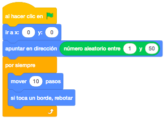
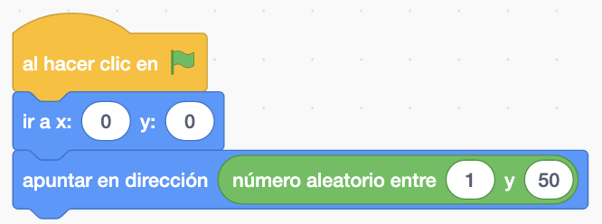
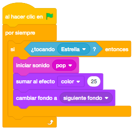
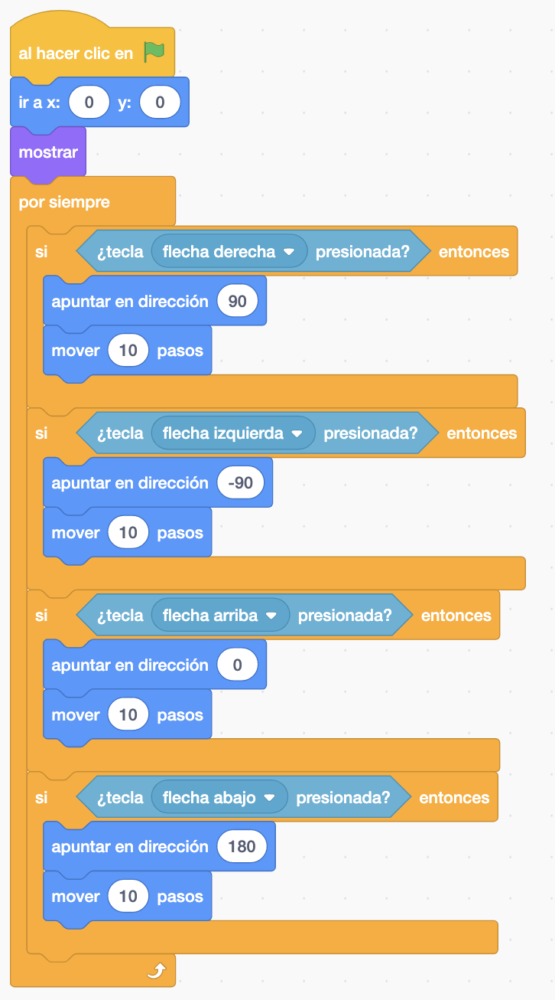
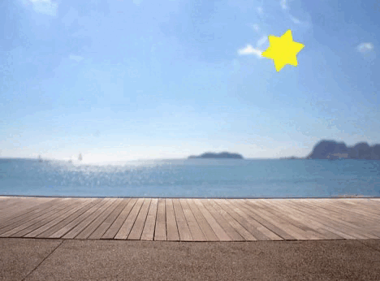

Necesitamos dos personajes de la biblioteca del Scratch.
Como mímino necesitamos dos escenarios de la biblioteca pero podemos tener todos los que queramos.
El juego consiste en que nosotros manejaremos un objeto con los cursores por la pantalla y habrá otro objeto
que se irá moviendo automáticamente por toda la pantalla.
Posicionamos el objeto que se va a mover automáticamente por toda pantalla en el cetro. Antes de iniciar el
movimiento, apuntaremos a una posición aleatoria para que cada vez el objeto empiece a moverse hacia una
dirección distinta.
una vez orientado en una dirección, lo moveremos por la pantalla, teniendo en cuenta que si toca un borde
rebote para que no pare nunca de moverse.

El otro objeto, el que moveremos con los cursores, lo posicionaremos en cualquier sitio de la pantalla
(podría ser aleatorio tanto la x como la y).
Una vez posicionado, controlaremos que si pulsamos alguno de los cursores, apunte en esa dirección y se
mueva unos pasos.

Añadiremos algo de emoción al juego. Si el objeto que se mueve, toca a nuestro objeto, desencadenará un cambio de escenario. Además, cada vez que esto ocurra, haremos un sonido que añadiremos a nuestro objeto desde la biblioteca de sonidos. Aprovecharemos también el choque de objetos para practicar los efectos gráficos, cambiando el color de nuestro objeto.

Si ejecutamos lo que hemos hecho, observamos que si se tocan, hace un cambio de escenario continuamente
hasta que dejande tocarse.
Para solucionarlo, lo que tenemos que hacer es esconder nuestro objeto, esperar un tiempo y volver a
mostrarlo. Así le dará tiempo a la estrella a atravesarlo y solo tocarlo una vez.

Podemos hacer una variable de vidas para que cada vez que se toquen, nos quite una vida. Le daremos una
valor inicial con el número de vidas y cuando llegue a 0 se acabará el juego.
También podemos añadir que cuando llegue a 0 vidas, aparezca un nuevo escenario de "Game Over" que no
aparecerá antes en los cambios de escenario.
Y el juego quedaría así.

Para ver el juego terminado pulsa
aquí.
Para descargarte el juego terminado pulsa
aquí.